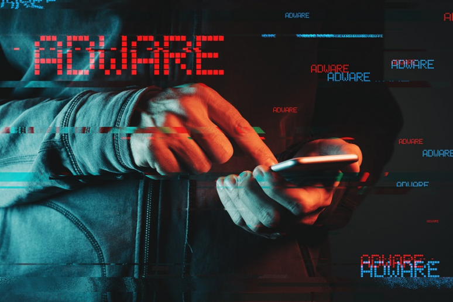
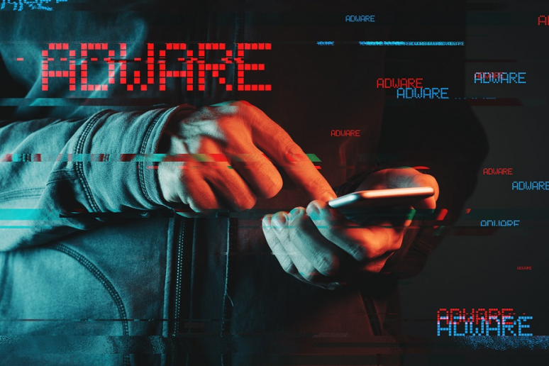

Cracker
Cracker
La evolución de la ciberseguridad brinda un contexto más amplio de cómo fue la transformación al mundo digital y los riesgos que surgieron con este cambio.
El primer hacker de la historia fue Nevil Maskelyne. En 1903, interceptó la primera transmisión de telégrafo inalámbrico, mostrando las vulnerabilidades de este sistema desarrollado por Marconi.
John Draper fue el primer ciberdelincuente, mejor conocido como “Captain Crunch”. Draper, descubrió que el sonido emitido por un silbato que se obsequiaba en las cajas de cereal de “Cap’n Crunch”, podía engañar a la señal de la central telefónica y así poder realizar llamadas gratis.
En los años 70s apareció el primer malware de la historia: Creeper, un programa que se replicaba así mismo. Este malware mostraba el mensaje “I’m a creeper, catch me if you can!”. A partir de ahí, nace el primer antivirus llamado Reaper, que su función era la de eliminar las infecciones por Creeper.
El malware en los años 80s incrementó su presencia y a la par se desarrollaron antivirus más eficientes. En la actualidad, se utiliza una plataforma de detección y respuesta de endpoint (EDR) para proteger los equipos de un ataque de malware debido a su gran evolución.
A finales de esta década, Kevin Mitnick utilizó ingeniería social para tener acceso a información personal y confidencial; este tipo de ciberataque, que comenzó a tener mayor uso en aquella época, sigue siendo una de los métodos más populares para vulnerar los activos de una empresa, sin embargo, se pueden prevenir y reducir con una buena estrategia, formación a colaboradores y protocolos de security awareness.
La regulación del Internet es un reto enorme debido a su carácter internacional y a la variedad en su contenido. A principios de los 90s la necesidad de hacer frente a los ataques cibernéticos se convirtió en tema de discusión internacional, la falta de conocimiento sobre el ciberespacio, de medidas de seguridad, jurisdicción y competencia afectaba sobre todo a los países desarrollados, donde el uso de la tecnología y el abuso de usuarios mermaba en la economía y sociedad.
Las primeras acciones para crear mecanismos legales frente a los ciberdelitos fueron locales. En 1986, en Estados Unidos se creó la Computer Fraud and Abuse Act, sin embargo, su capacidad se vio sobrepasada por la transformación tecnológica.
En 1995, se formó en Europa un comité de expertos en delitos informáticos para trabajar en estrategias y contrarrestar los ataques a través de Internet. Convencidos de la necesidad de aplicar una política penal para proteger a la sociedad frente a la ciberdelincuencia y la importancia de fortalecer la cooperación internacional, para 2001 se aprobó y firmó el Convenio de Budapest, que hoy en día es integrado por 56 países.
Con el paso del tiempo, se fueron inventando nuevos tipos de ciberataques, estos, se clasifican en 5 tipos los cuales podremos consultar a través de este menú:

 
